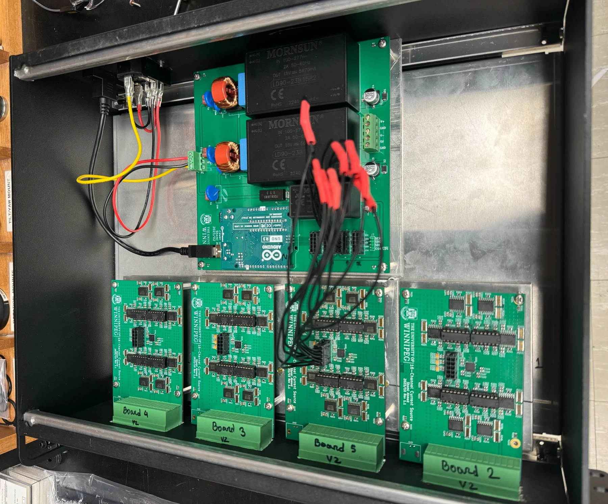
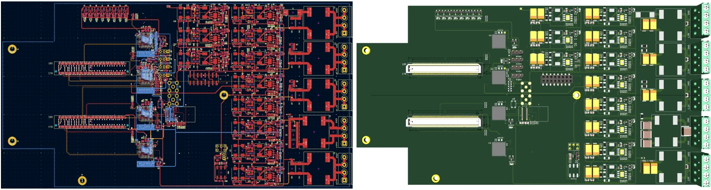
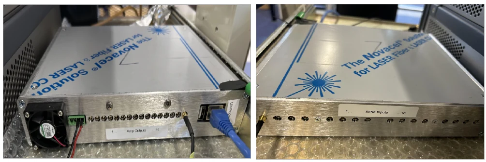
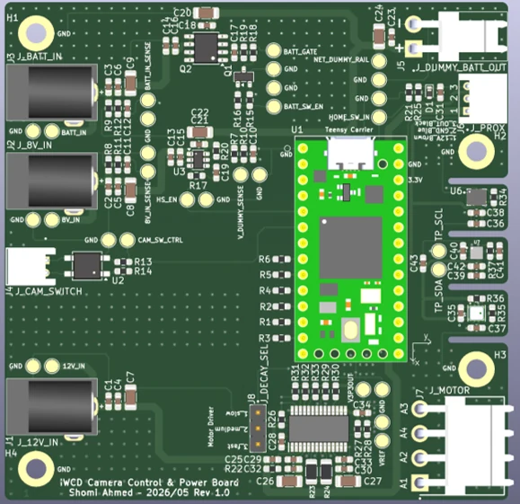
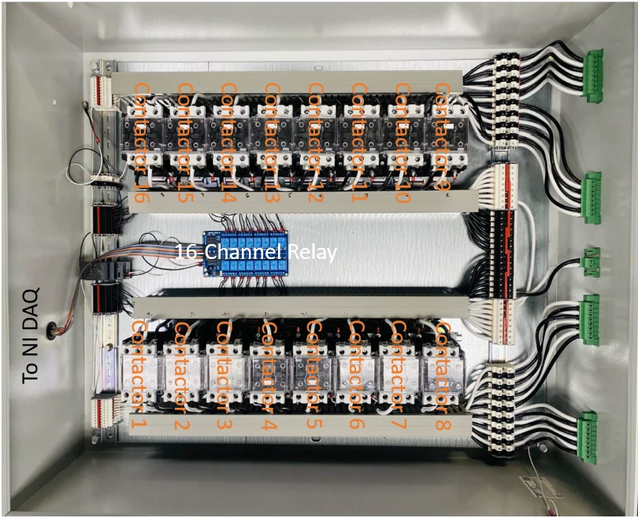
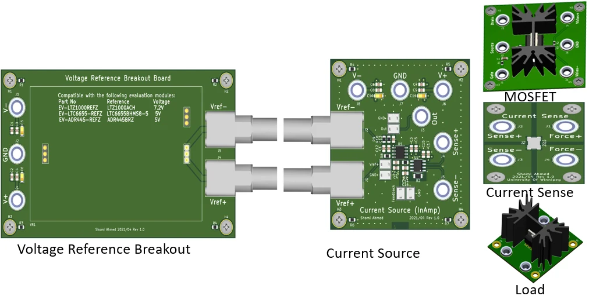

warning: in the working copy of 'index.html', LF will be replaced by CRLF the next time Git touches it
diff --git a/index.html b/index.html
index bc7e5a9..5f40466 100644
--- a/index.html
+++ b/index.html
@@ -1,4 +1,4 @@
-<!DOCTYPE html>
+<!DOCTYPE html>
 <html lang="en">
 <head>
   <meta charset="UTF-8" />
@@ -8,7 +8,7 @@
   <title>Iterant Systems | Electronics, Mechanical Design & Complete Hardware</title>
   <meta
     name="description"
-    content="Ottawa-based engineering company delivering complete hardware: precision electronics, embedded systems, custom PCBs, mechanical design, custom enclosures, rapid prototyping, and validation—from one difficult subsystem to a deployment-ready product."
+    content="Ottawa-based engineering company delivering complete hardware: precision electronics, embedded systems, custom PCBs, mechanical design, custom enclosures, rapid prototyping, and validation—from one difficult subsystem to a deployment-ready product."
   />
   <link rel="canonical" href="https://iterant.ca/" />
   <meta name="theme-color" content="#0b0f14" />
@@ -1029,7 +1029,83 @@
         transition-duration: 0.01ms !important;
       }
     }
-  </style>
+  
+
+    /* ITERANT EXPERIENCE GALLERY START */
+    .experience-gallery {
+      display: grid;
+      grid-template-columns: repeat(3, minmax(0, 1fr));
+      gap: 1.1rem;
+    }
+    .experience-card {
+      display: flex;
+      min-width: 0;
+      flex-direction: column;
+      overflow: hidden;
+      border: 1px solid var(--border);
+      border-radius: 20px;
+      background: var(--card);
+      transition: transform .22s ease, border-color .22s ease, box-shadow .22s ease;
+    }
+    .experience-card:hover {
+      transform: translateY(-4px);
+      border-color: rgba(94,162,255,.46);
+      box-shadow: 0 18px 45px rgba(0,0,0,.24);
+    }
+    .experience-card-image {
+      aspect-ratio: 16 / 10;
+      overflow: hidden;
+      background: #fff;
+      border-bottom: 1px solid var(--border-soft);
+    }
+    .experience-card-image img {
+      width: 100%;
+      height: 100%;
+      display: block;
+      object-fit: contain;
+      transition: transform .28s ease;
+    }
+    .experience-card:hover .experience-card-image img { transform: scale(1.025); }
+    .experience-card-body {
+      display: flex;
+      flex: 1;
+      flex-direction: column;
+      gap: .65rem;
+      padding: 1.2rem;
+    }
+    .experience-card-label {
+      color: var(--accent-2);
+      font-size: .72rem;
+      font-weight: 800;
+      letter-spacing: .1em;
+      text-transform: uppercase;
+    }
+    .experience-card h3 { font-size: 1.06rem; line-height: 1.3; }
+    .experience-card p { color: var(--muted); font-size: .9rem; }
+    .experience-card-link {
+      margin-top: auto;
+      padding-top: .3rem;
+      color: var(--accent);
+      font-size: .86rem;
+      font-weight: 800;
+    }
+    .experience-card:hover .experience-card-link { color: var(--accent-2); }
+    .experience-disclaimer {
+      margin-top: 1.3rem;
+      border-left: 3px solid var(--accent);
+      color: var(--muted);
+      font-size: .86rem;
+      padding-left: .9rem;
+    }
+    @media (max-width: 1000px) {
+      .experience-gallery { grid-template-columns: repeat(2, minmax(0, 1fr)); }
+    }
+    @media (max-width: 650px) {
+      .experience-gallery { grid-template-columns: 1fr; }
+    }
+    /* ITERANT EXPERIENCE GALLERY END */
+
+</style>
 </head>
 
 <body>
@@ -1072,11 +1148,11 @@
           <h1>Hardware,<br /><span>Evolved.</span></h1>
           <p class="hero-copy">
             Iterant Systems helps research groups, startups, and advanced product teams
-            design, build, integrate, and validate complete hardware—electronics,
+            design, build, integrate, and validate complete hardware—electronics,
             firmware, and the custom enclosures and mechanical structures that turn
             them into finished, deployment-ready products.
           </p>
-          <div class="engagement-note">Full programs, individual work packages—or the complete device, delivered as one</div>
+          <div class="engagement-note">Full programs, individual work packages—or the complete device, delivered as one</div>
           <div class="button-row">
             <a
               class="btn btn-primary"
@@ -1111,7 +1187,7 @@
           <p>
             Technical depth in precision electronics, embedded systems, and integrated
             mechanical design, combined with the practical coordination needed to turn
-            designs into complete working hardware—boards, firmware, and the physical
+            designs into complete working hardware—boards, firmware, and the physical
             product around them.
           </p>
         </div>
@@ -1209,110 +1285,103 @@
       </div>
     </section>
 
+    
     <section id="work">
       <div class="container">
         <div class="section-heading">
-          <div class="section-kicker">Representative experience & integrated delivery</div>
-          <h2>Complex hardware, presented at capability level</h2>
+          <div class="section-kicker">Representative engineering experience</div>
+          <h2>Selected hardware across precision, embedded, sensor, and control systems</h2>
           <p>
-            Examples below reflect the engineering depth behind Iterant while keeping
-            project-specific identities, unpublished details, and collaboration-sensitive
-            information out of the public site. Where a project needs a complete physical
-            product, specialist mechanical design can be integrated into the same
-            Iterant-managed workflow.
+            Visual examples of the engineering depth behind Iterant, presented at capability level.
+            Select a card for a concise case study showing the technical challenge, engineering scope,
+            and capabilities demonstrated.
           </p>
         </div>
 
-        <div class="work-grid">
-          <article class="work-card">
-            <div>
-              <h3>Precision Control & Measurement Platforms</h3>
-              <p>
-                Multi-channel, ultra-stable electronics for precision current control,
-                low-noise measurement, magnetic systems, and scientific instrumentation.
-              </p>
+        <div class="experience-gallery">
+          <a class="experience-card" href="case-studies/precision-instrumentation.html">
+            <div class="experience-card-image">
+              
             </div>
-            <ul class="feature-list">
-              <li>64-channel precision current architecture</li>
-              <li>Sub-ppm stability targets and characterization</li>
-              <li>Precision DAC and instrumentation-amplifier design</li>
-              <li>Low-current monitoring and high-current switching systems</li>
-            </ul>
-          </article>
+            <div class="experience-card-body">
+              <div class="experience-card-label">Precision instrumentation</div>
+              <h3>Precision Multi-Channel Instrumentation</h3>
+              <p>High-channel-count precision current control, power architecture, enclosure integration, and validation.</p>
+              <span class="experience-card-link">View case study →</span>
+            </div>
+          </a>
 
-          <article class="work-card">
-            <div>
-              <h3>Embedded Imaging & Instrumentation Control</h3>
-              <p>
-                Embedded compute and real-time control for remote cameras, sensors,
-                motion systems, power paths, and unattended instrumentation.
-              </p>
+          <a class="experience-card" href="case-studies/detector-sensor-electronics.html">
+            <div class="experience-card-image">
+              
             </div>
-            <ul class="feature-list">
-              <li>Linux compute with microcontroller supervision</li>
-              <li>Camera, motor, sensor, and power integration</li>
-              <li>Ethernet/PoE and remote operation</li>
-              <li>Telemetry, battery management, and endurance testing</li>
-            </ul>
-          </article>
+            <div class="experience-card-body">
+              <div class="experience-card-label">High-density electronics</div>
+              <h3>High-Density Readout Electronics</h3>
+              <p>Dense mixed-signal PCB architecture, channel integration, power distribution, and interface design.</p>
+              <span class="experience-card-link">View case study →</span>
+            </div>
+          </a>
 
-          <article class="work-card">
-            <div>
-              <h3>Detector, Sensor & High-Density Interfaces</h3>
-              <p>
-                Mixed-signal electronics and interconnect platforms for high-channel-count
-                sensing, precision biasing, and high-speed readout.
-              </p>
+          <a class="experience-card" href="case-studies/detector-sensor-electronics.html">
+            <div class="experience-card-image">
+              
             </div>
-            <ul class="feature-list">
-              <li>SiPM/MPPC amplifier and bias platforms</li>
-              <li>Low-noise analog front ends</li>
-              <li>High-density cable and connector integration</li>
-              <li>Controlled-impedance, differential, and multi-layer PCB systems</li>
-            </ul>
-          </article>
+            <div class="experience-card-body">
+              <div class="experience-card-label">Sensor electronics</div>
+              <h3>Low-Noise Detector & Sensor Electronics</h3>
+              <p>Amplification, biasing, precision measurement, and detector-interface electronics for sensitive instrumentation.</p>
+              <span class="experience-card-link">View case study →</span>
+            </div>
+          </a>
 
-          <article class="work-card">
-            <div>
-              <h3>Automated Hardware Test & Validation Systems</h3>
-              <p>
-                Software-assisted test infrastructure for repeatable bring-up,
-                characterization, endurance testing, and engineering decisions.
-              </p>
+          <a class="experience-card" href="case-studies/embedded-imaging-control.html">
+            <div class="experience-card-image">
+              
             </div>
-            <ul class="feature-list">
-              <li>Python control, telemetry, and structured test logs</li>
-              <li>Power-mode and battery-cycle validation</li>
-              <li>Test fixtures, acceptance criteria, and fault isolation</li>
-              <li>Data visualization and design-iteration support</li>
-            </ul>
-          </article>
+            <div class="experience-card-body">
+              <div class="experience-card-label">Embedded control</div>
+              <h3>Embedded Imaging & Power Control</h3>
+              <p>Camera power switching, local supervision, sensing, motion interfaces, and multi-domain power management.</p>
+              <span class="experience-card-link">View case study →</span>
+            </div>
+          </a>
 
-          <article class="work-card">
-            <div>
-              <h3>Integrated Mechanical & Enclosure Delivery</h3>
-              <p>
-                For projects that need a complete physical product, Iterant can integrate
-                specialist mechanical design and rapid prototyping under the same project
-                scope, requirements, and system-integration workflow.
-              </p>
+          <a class="experience-card" href="case-studies/industrial-control-systems.html">
+            <div class="experience-card-image">
+              
             </div>
-            <ul class="feature-list">
-              <li>Custom enclosures, mounts, brackets, and structural parts</li>
-              <li>PCB-aware mechanical design and connector/interface coordination</li>
-              <li>Prototype print-fit-revise cycles and assembly checks</li>
-              <li>Fixtures and jigs for repeatable bring-up and validation</li>
-            </ul>
-          </article>
+            <div class="experience-card-body">
+              <div class="experience-card-label">Industrial control</div>
+              <h3>Relay & Contactor Control Systems</h3>
+              <p>Control electronics, terminal distribution, multi-channel power switching, wiring, and enclosure-level integration.</p>
+              <span class="experience-card-link">View case study →</span>
+            </div>
+          </a>
+
+          <a class="experience-card" href="case-studies/precision-instrumentation.html">
+            <div class="experience-card-image">
+              
+            </div>
+            <div class="experience-card-body">
+              <div class="experience-card-label">Precision analog</div>
+              <h3>Precision Analog Electronics</h3>
+              <p>Stable references, current sources, measurement interfaces, and modular analog building blocks.</p>
+              <span class="experience-card-link">View case study →</span>
+            </div>
+          </a>
         </div>
 
-        <p class="discretion-note">
-          Specific project names, institutional affiliations, schematics, and photographs
-          are shared publicly only when permissions and IP boundaries are clear.
+        <p class="experience-disclaimer">
+          These examples are representative prior engineering experience from the founder’s professional roles
+          and technical work; they are not represented as Iterant customer past performance. Confirm public-use
+          permission for each image before publishing. Project affiliations and IP remain with the applicable
+          organizations where relevant.
         </p>
       </div>
     </section>
 
+
     <section id="process">
       <div class="container">
         <div class="section-heading">
@@ -1333,7 +1402,7 @@
           <article class="process-card">
             <div class="step">Step 02</div>
             <h3>Design</h3>
-            <p>Architecture, schematics, simulation, PCB layout, firmware, 3D CAD of enclosures and structures, and test planning—electronics and mechanics designed together.</p>
+            <p>Architecture, schematics, simulation, PCB layout, firmware, 3D CAD of enclosures and structures, and test planning—electronics and mechanics designed together.</p>
           </article>
           <article class="process-card">
             <div class="step">Step 03</div>
@@ -1353,7 +1422,7 @@
         </div>
 
         <div class="scope-banner">
-          Engage Iterant for the complete product—electronics and enclosure together—or
+          Engage Iterant for the complete product—electronics and enclosure together—or
           only the phase, subsystem, or technical bottleneck that needs extra engineering capacity.
         </div>
       </div>
@@ -1369,7 +1438,7 @@
         <div class="industry-grid">
           <article class="industry-card">
             <h3>Research & Scientific Instrumentation</h3>
-            <p>Custom electronics, controls, readout, test systems, and deployable research hardware—housed in purpose-built enclosures and fixtures.</p>
+            <p>Custom electronics, controls, readout, test systems, and deployable research hardware—housed in purpose-built enclosures and fixtures.</p>
           </article>
           <article class="industry-card">
             <h3>Hardware Startups & Product Teams</h3>
@@ -1407,7 +1476,7 @@
             <p>
               Iterant supports research groups, startups, and advanced product teams
               through individual engineering work packages or complete hardware
-              development programs—from requirements and system architecture through
+              development programs—from requirements and system architecture through
               electronics, mechanical integration, sourcing, prototype assembly,
               bring-up, characterization, and deployment.
             </p>
@@ -1429,7 +1498,7 @@
           <ul class="credibility-list">
             <li>
               <strong>Ottawa, Ontario</strong>
-              Located within Canada’s research, telecom, embedded-systems, and
+              Located within Canada’s research, telecom, embedded-systems, and
               advanced-technology ecosystem.
             </li>
 
@@ -1469,7 +1538,7 @@
           <h2>Technology selected to fit the system</h2>
           <p>
             Platforms are chosen around performance, availability, lifecycle, integration,
-            and deployment—not around a fixed vendor stack.
+            and deployment—not around a fixed vendor stack.
           </p>
         </div>
 
@@ -1483,7 +1552,7 @@
           <span class="chip">ARM & x86 Embedded Compute</span>
           <span class="chip">Microcontrollers & SoMs</span>
           <span class="chip">Ethernet & PoE</span>
-          <span class="chip">USB, SPI, I²C & UART</span>
+          <span class="chip">USB, SPI, I²C & UART</span>
           <span class="chip">Controlled Impedance</span>
           <span class="chip">Signal Integrity</span>
           <span class="chip">Precision Analog</span>
@@ -1509,7 +1578,7 @@
           <div class="contact-form-layout">
             <div class="contact-copy">
               <div class="section-kicker">Discuss a project</div>
-              <h2>Tell us what you’re building.</h2>
+              <h2>Tell us what you’re building.</h2>
               <p>
                 Share the problem, current design stage, technical constraints,
                 expected deliverable, and timing. Whether it is a precision circuit,
@@ -1621,7 +1690,7 @@
               <label class="form-check" for="nda">
                 <input type="checkbox" id="nda" name="nda" />
                 <span>
-                  I’m open to signing an NDA before sharing sensitive technical information.
+                  I’m open to signing an NDA before sharing sensitive technical information.
                 </span>
               </label>
 
@@ -1651,8 +1720,8 @@
 
   <footer>
     <div class="container footer-row">
-      <span>© 2026 Iterant Systems Inc.</span>
-      <span>Precision electronics • Embedded systems • Mechanical design & rapid prototyping • Hardware realization</span>
+      <span>© 2026 Iterant Systems Inc.</span>
+      <span>Precision electronics • Embedded systems • Mechanical design & rapid prototyping • Hardware realization</span>
       <a href="mailto:hello@iterant.ca">hello@iterant.ca</a>
     </div>
   </footer>
@@ -1759,9 +1828,9 @@
           nda: document.getElementById("nda").checked
         };
 
-        setStatus("Sending your inquiry…");
+        setStatus("Sending your inquiry…");
         submitBtn.disabled = true;
-        submitBtn.textContent = "Sending…";
+        submitBtn.textContent = "Sending…";
 
         try {
           const response = await fetch(CONTACT_ENDPOINT, {
@@ -1786,13 +1855,13 @@
           contactForm.reset();
           requiredFields.forEach(clearFieldError);
           setStatus(
-            "Thanks — your inquiry has been received. We’ll get back to you shortly.",
+            "Thanks — your inquiry has been received. We’ll get back to you shortly.",
             "success"
           );
         } catch (error) {
           console.error("Contact form error:", error);
           setStatus(
-            "We couldn’t send the form. Please email hello@iterant.ca instead.",
+            "We couldn’t send the form. Please email hello@iterant.ca instead.",
             "error"
           );
         } finally {
@@ -1803,4 +1872,4 @@
     }
   </script>
 </body>
-</html>
\ No newline at end of file
+</html>
